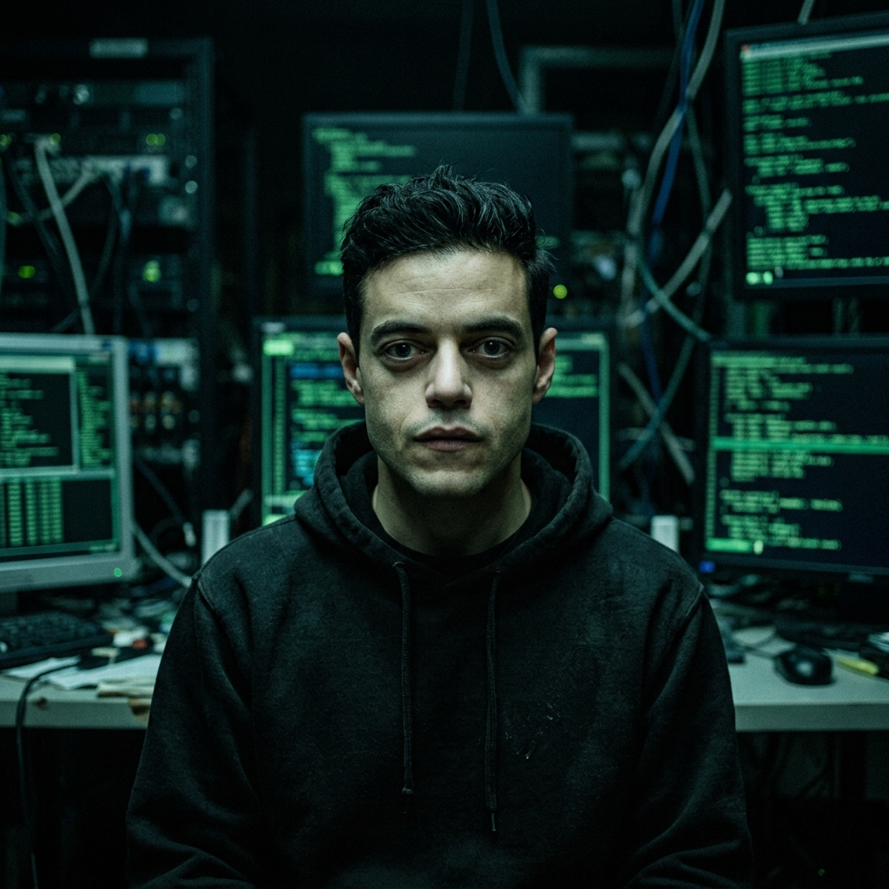
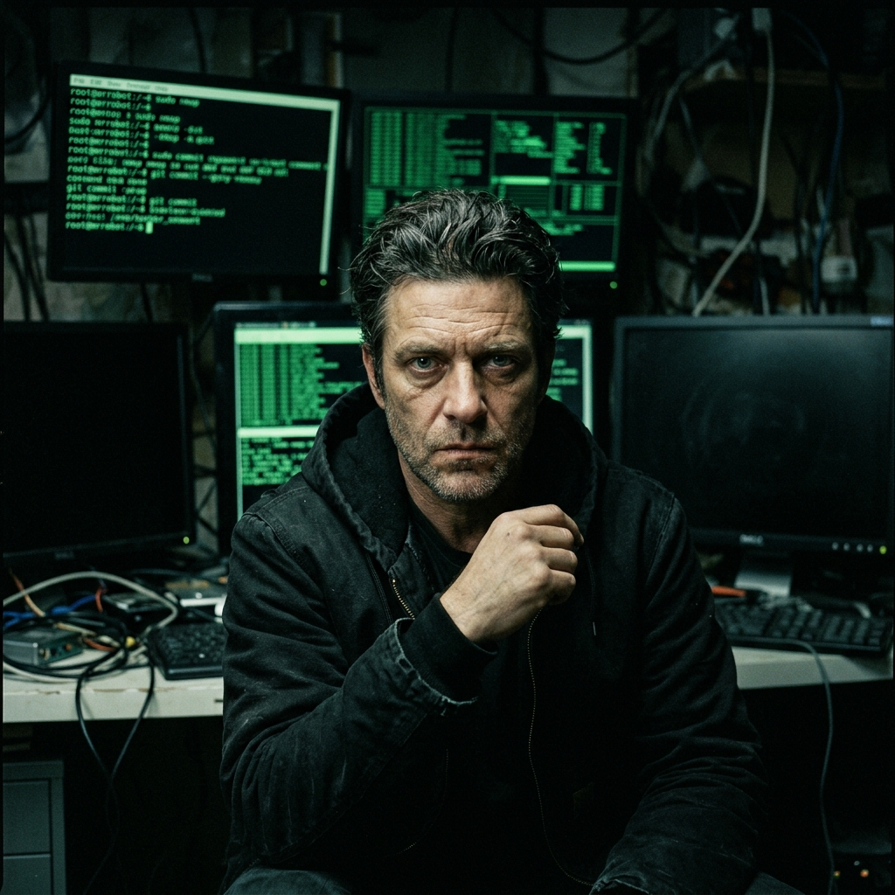
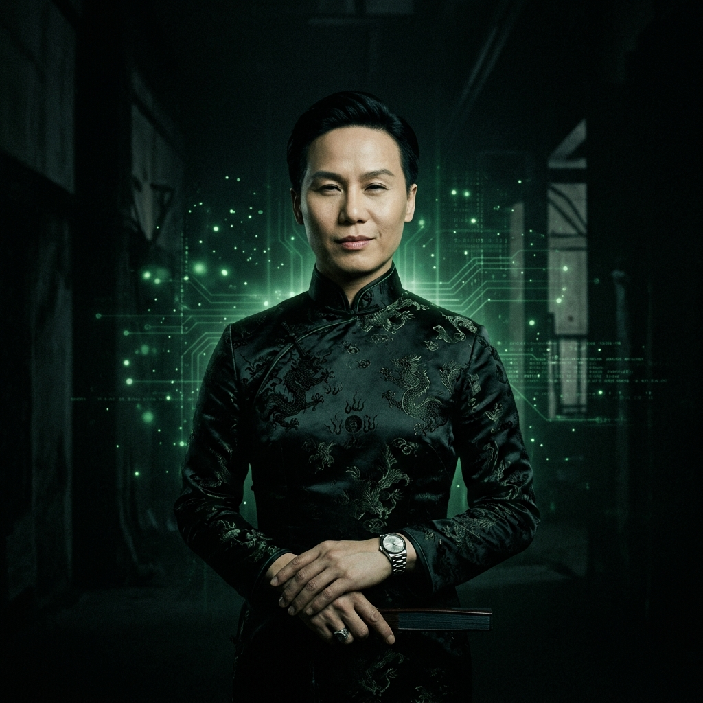

Üniversitesi & Teknoloji Enstitüsü
Gerçeği sorgula. Sistemi anla. Kodu değiştir.
Sistemi yeniden yazmak isteyenler için kurulmuş elit bir eğitim kurumu.
Siber Güvenlik bölümü öğrencilerinin bu hafta Salı günü saat 09:00'da zorunlu acil tatbikata katılması gerekmektedir. 5/9 Operasyonu simülasyonu gerçekleştirilecek. Mrg. Elliot Alderson tatbikatı yönetecektir.
Angela Moss'un yönetimindeki Sosyal Mühendislik Laboratuvarı, kimlik simülasyon sisteminin güncellenmesi nedeniyle 16-18 Nisan tarihleri arasında hizmet dışı olacaktır. Alternatif sınıf mekânları e-posta ile bildirilecektir.
Prof. Whiterose önderliğinde düzenlenecek yıllık "Zaman ve Alternatif Gerçeklikler" sempozyumuna tüm öğrenciler davetlidir. Fizik-Teknoloji Kesişimleri programı öğrencileri için katılım zorunludur.
fsociety Üniversitesi'nin geleneksel Hackathon etkinliği 24-25 Nisan tarihlerinde düzenlenecektir. 2-4 kişilik ekiplerle gerçek sistem penetrasyon senaryoları üzerinde çalışılacaktır. Ödül: Tam burs.
Doç. Darlene Alderson tarafından verilen AGV-301 dersi müfredatı, Tor üzerinden anonimlik ve döner proxy sistemleri konularını kapsayacak şekilde güncellendi. Yeni ders materyalleri .onion adresten erişilebilir.
BT departmanı, kampüs ağında kimliği belirsiz bir varlığın izlerini tespit etmiştir. Tüm öğrencilerin kişisel cihazlarında tam disk şifrelemesi yapmaları ve şifrelerini değiştirmeleri önemle tavsiye edilir.
Sistem açıklarını tespit etme, saldırı vektörlerini analiz etme ve kritik altyapıları koruma üzerine yoğunlaşan dört yıllık mühendislik programı. Elliot Alderson metodolojisi temel alınmıştır.
İnsan psikolojisini manipüle etme, kurumsal güven inşası ve sistemler içindeki insan açıklarını keşfetme sanatını araştıran disiplinler arası program. Angela Moss yöntemi ile kurumsal körelme analizi.
Tor ağı, VPN tünelleme, darknet protokolleri ve anonimlik teknolojilerini inceleyen program. Dijital kimlik silme ve iz örtme teknikleri üzerine yoğun laboratuvar çalışması.
Küresel teknokorporasyonların güç dinamikleri, veri tekelciliği ve dijital kapitalizmin eleştirisi. E Corp vakası ve benzeri yapıların anatomisi. Tyrell Wellick liderlik teorileri analizi.
Post-kuantum şifreleme, paralel hesaplama sistemleri ve determinizm ötesi bilgisayar mimarileri. Teorik fizik ile kriptografinin kesiştiği ileri düzey araştırma programı.
Dijital çağda kimlik, bellek ve gerçeklik algısı. Disosiyatif kimlik bozukluğundan sistem manipülasyonuna uzanan psiko-sosyal araştırmalar. İnsan davranışlarının algoritmik modellenmesi.

Dünyanın en yetenekli güvenlik araştırmacılarından biri. Sosyal izolasyonu ve yoğun anksiyetesine rağmen sistem açıklarını insan hatası merceğiyle inceler. Morphine bağımlılığından kurtulma sürecindedir.
// takma ad: mr_robot_override
Üniversitenin kurucu ismi. Geleneksel otoriteye meydan okuyan, sistemi kökten yeniden yazan vizyonuyla bilinen alışılmadık akademisyen. Gerçek mi yoksa zihnin yarattığı bir figür mü? Tartışmalı.
// takma ad: mr_robotKardeşi Elliot'ın gölgesinde kalmayı reddeden bağımsız güvenlik uzmanı. Ransomware tasarımı ve sosyal medya manipülasyonu konusunda dünya genelinde tanınan akademisyen. Oldukça öngörülmezdir.
// takma ad: D4rl3n3Kurumsal güç yapıları içinde çalışarak onları değiştirme stratejisi üzerine uzmanlaşmış nadir bir akademisyen. İdealizm ve pragmatizm arasındaki kırılgan dengeyi inceler. E Corp'ta undercover görev geçmişi vardır.
// takma ad: ang3la_m0ssİsveçli kökenli, kariyer odaklı ve son derece hırslı bir teknoloji yöneticisi. Machiavellian liderlik teorileri üzerine yazdığı tezler dünyaca tanınmıştır. Hırsı zaman zaman etik sınırlarını zorlamaktadır.
// takma ad: t1r3ll_w3ll1ck
Zaman ve gerçeklik algısına takıntılı, tartışmalı teorileriyle tanınan gizemli akademisyen. Dark Army Araştırma Merkezi'nin kurucusu. Her şeyin kontrolde olduğunu ve zamanın doğrusal olmadığını savunur.
// takma ad: wh1t3r0se
📍 Adres:
Coney Island, Brooklyn
Steel Mountain Kampüsü, Blok 5/9
New York, NY 10000
📧 E-posta:
admin@fsociety.edu
🔗 Güvenli Hat:
fsociety7evhgvm3.onion